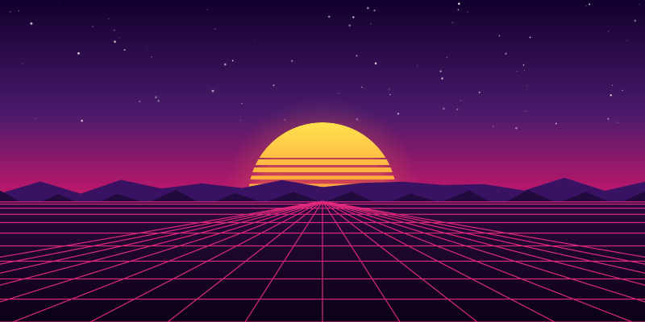
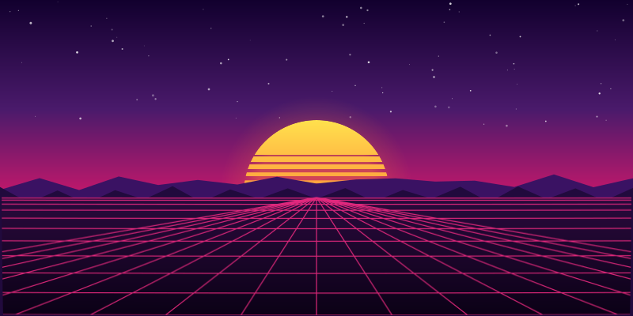
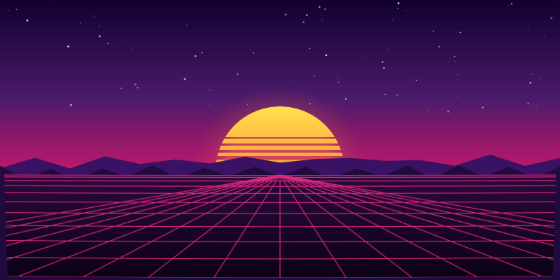
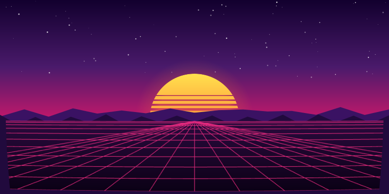

<!doctype html>
<meta charset="utf-8"><title>ground warp strength</title>
<style>
  body { margin:0; background:#111; color:#ddd; font:12px/1.4 ui-monospace,monospace }
  figure { margin:0; padding:6px 10px }
  figcaption { margin-bottom:4px; color:#8ab }
  img { display:block; width:800px; height:400px }
</style>
<figure><figcaption>k000  k=0  — no warp — composition only · 8.3kB</figcaption></figure>
<figure><figcaption>k020  k=0.02  — barely there · 37.5kB</figcaption></figure>
<figure><figcaption>k060  k=0.06  — current default · 37.5kB</figcaption></figure>
<figure><figcaption>k120  k=0.12  — heavy · 37.5kB</figcaption></figure>
